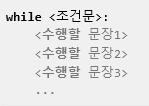
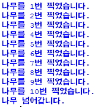
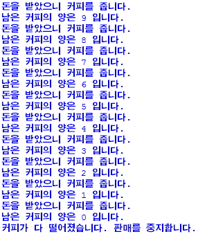
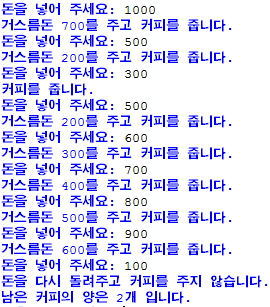

chapter07 - while문에 대해 알아보자
반복해서 문장을 수행해야 할 경우 while문을 사용한다.
다음은 while문의 기본 구조이다.

조건문이 참인 동안 while문 아래의 문장들을 계속해서 수행하게 된다.
#예제7.1
"열 번 찍어 안 넘어 가는 나무 없다."
treeHit = 0
while treeHit < 10:
treeHit = treeHit +1
print("나무를 %d번 찍었습니다." % treeHit)
if treeHit == 10:
print("나무 넘어갑니다.")

위의 예에서 while문의 조건문은 treeHit < 10 이다.
즉 treeHit가 10보다 작은 동안에 while 문 안의 문장들을 계속 수행하게 된다.
whlie문 안의 문장을 보면 제일 먼저 treeHit = treeHit + 1로 treeHit값이 계속 1씩 증가한다.
그리고 나무를 treeHit번 만큼 찍었음을 알리는 문장을 출력하고 treeHit가 10이 되면
“나무 넘어갑니다”라는 문장을 출력하고 treeHit < 10라는 조건문이 거짓이 되어 while문을 빠져 나가게 된다.
여기서 treeHit = treeHit +1은 프로그래밍을 할 때 매우 자주 쓰이는 기법으로
treeHit의 값을 1만큼씩 증가시킬 목적으로 쓰이는 것이다.
이것은 treeHit += 1처럼 쓰기도 한다.
#예제7.2
coffee = 10
money = 300
while money:
print("돈을 받았으니 커피를 줍니다.")
coffee = coffee -1
print("남은 커피의 양은 %d 입니다." % coffee)
if not coffee:
print("커피가 다 떨어졌습니다. 판매를 중지합니다.")
break

money가 300으로 고정되어 있으니까 while money: 에서 조건문인 money는 0이 아니기 때문에 항상 참이다.
따라서 무한 루프를 돌게 된다.
그리고 while문의 내용을 한번 수행할 때 마다 coffee = coffee - 1에 의해서 coffee의 개수가 한 개씩 줄어들게 된다.
만약 coffee가 0이 되면 if not coffee: 라는 문장에서 not coffee가 참이 되므로
if문 다음의 문장들이 수행이 되고 break가 호출되어 while문을 빠져 나가게 된다.
자판기의 실제 과정과 비슷하게 만들어보자
#예제7.3
coffee = 10
while 1:
money = int(input("돈을 넣어 주세요: "))
if money == 300:
print("커피를 줍니다.")
coffee = coffee -1
elif money > 300:
print("거스름돈 %d를 주고 커피를 줍니다." % (money -300))
coffee = coffee -1
else:
print("돈을 다시 돌려주고 커피를 주지 않습니다.")
print("남은 커피의 양은 %d개 입니다." % coffee)
if not coffee:
print("커피가 다 떨어졌습니다. 판매를 중지 합니다.")
break
